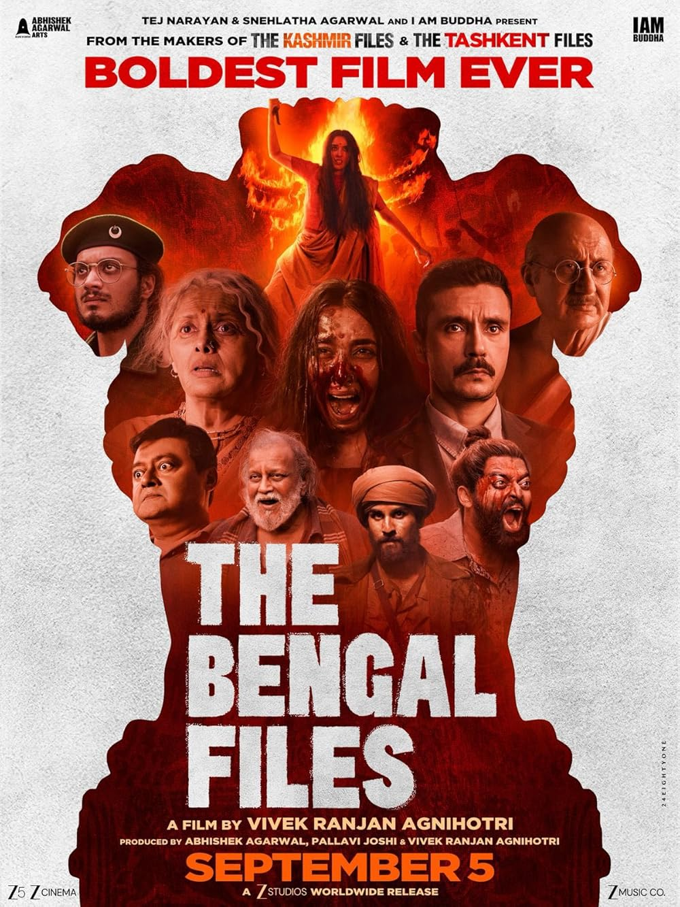

"Ba***ds of Bollywood" is a bold, entertaining, and surprisingly insightful series. Aryan Khan delivers a confident performance, capturing both the glitz of Bollywood and the hidden challenges behind the scenes. The story blends drama, humor, and real-life struggles of the industry, making it a must-watch for fans of Indian cinema.

"The Bengal Files" is a gripping and well-crafted series. Aryan Khan portrays a layered character navigating crime, mystery, and intrigue in Bengal’s underworld. The series stands out for its tight storytelling, compelling visuals, and strong performances. Perfect for viewers who enjoy thrillers with depth and authenticity.
Use our free tool to extract SEO-friendly keywords for your own reviews and blog posts.
Visit KeywordsFromURLs